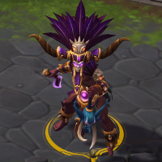
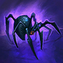
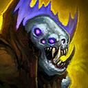
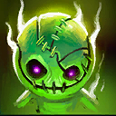
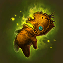
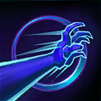
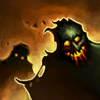
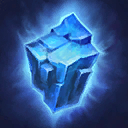
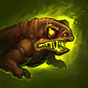
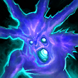

Nazeebo
Welcome to our Nazeebo guide for Heroes of the Storm. Here you will learn everything you need to know in order to play Nazeebo in a competitive environment, whether you play on your own or with a team.
Spider Build
| Level 1 | Level 4 | Level 7 | Level 10 | Level 13 | Level 16 | Level 20 |
|---|---|---|---|---|---|---|
|  |  |  |  |
The Spider Build provides outstanding single-target damage, especially during the mid-late game. Talents like Spirit of Arachyr Icon Spirit of Arachyr at Level 7 and Spider Colony Icon Spider Colony at Level 16 make hitting an isolated target very rewarding. At Level 13, Superstition Icon Superstition can be a golden talent against ability-heavy opponents such as Ragnaros or Li-Ming, as it reduces their damage against Nazeebo significantly. To conclude this talent build, we recommend Vile Infection Icon Vile Infection at Level 20, as it adds an extraordinary amount of poison damage to both Nazeebo's Basic Attacks and Basic Abilities.
Zombie Build
| Level 1 | Level 4 | Level 7 | Level 10 | Level 13 | Level 16 | Level 20 |
|---|---|---|---|---|---|---|
|  |  |  |
The Zombie Build seeks to empower Nazeebo's most dangerous ability, which is Zombie Wall Icon Zombie Wall. By increasing the casting range of all of Nazeebo's Basic Abilities by 20%, Thing of the Deep Icon Thing of the Deep allows Nazeebo to cast his abilities from a safer distance, which ultimately enables him to aim more carefully. Trapping an enemy Hero within the Zombie Wall can single-handedly decide team fights, especially after acquiring talents like Dead Rush Icon Dead Rush at Level 7 and Ring of Poison Icon Ring of Poison at Level 16. However, Zombie Wall is not only a great tool to take down enemy Heroes, it is also a powerful ability to clear Mercenary Camps and destroy enemy Structures very quickly.
Toad Build
| Level 1 | Level 4 | Level 7 | Level 10 | Level 13 | Level 16 | Level 20 |
|---|---|---|---|---|---|---|
|  |  |
The Toad Build focuses on Nazeebo's Plague of Toads Icon Plague of Toads ability, which provides him with outstanding poke and strong waveclear. Ravenous Spirit Icon Ravenous Spirit complements this playstyle very well, since Nazeebo tries to keep a healthy distance between himself and the enemy Warriors and melee Assassins. Once Toads of Hugeness Icon Toads of Hugeness has been acquired at Level 7, try to hit Minion Waves and Mercenary Camps from a large distance in order to deal the highest damage possible.
Go Back